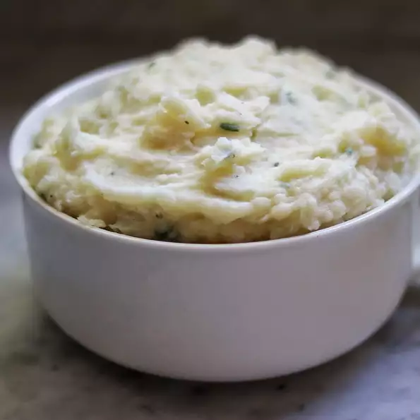

Creamy Garlic-Parmesan Mashed Potatoes

Description
These are classic mashed potatoes, brightened up with a substantial amount of garlic.
Thanks to the flavor powerhouse that is homemade roasted garlic, our creamy mashed
potatoes are the quintessential sidekick to the best meals your table will ever see.
Ingredients
- 5 pounds potatoes, peeled and quartered
- ¼ cup butter
- 6 cloves garlic, minced
- 2 cups 2% milk
- 1 cup freshly grated Parmesan cheese
- ¼ cup chopped fresh parsley
- 1 teaspoon sea salt
- ½ teaspoon ground black pepper
Steps
- Place potatoes into a large pot and cover with salted water; bring to a boil.
Reduce heat to medium-low and simmer until tender, 20 to 25 minutes.
- While potatoes are cooking, melt butter over medium-low heat in a small saucepan.
Add garlic and saute until soft, about 5 minutes.
- Drain potatoes and return to the pot. Add garlic-butter mixture, milk, Parmesan cheese,
parsley, sea salt, and pepper; mash until smooth.
Back to Homepage